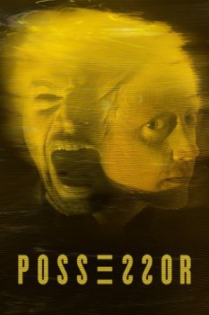

País:Canadá, 103 minutos.
Idiomas:Inglés
GénerosTerror, Suspenso, Ciencia Ficción
Director/es:Brandon Cronenberg
Guionistas:Brandon Cronenberg
Códec de vídeo:Unknown
Número: 190


Certificación:
Argumento:
Tasya Vos es una agente de una organización secreta que utiliza implantes cerebrales para controlar el movimiento corporal de otras personas, obligándolas a cometer asesinatos que benefician a toda clase de peces gordos del mundo corporativo. Un día, durante una misión rutinaria, algo sale mal. La agente Vos se ve atrapada dentro de la mente de uno de los sujetos que trataba de controlar, cuyo apetito por la violencia se acaba convirtiendo en su peor aliado, superando incluso el suyo propio.
Reparto
Medio: Archivo de video,
Localización: D:\Multimedia\Películas\Possessor Controlador De Mentes (2020)\Possessor Controlador De Mentes (2020).mkv
Prestado: No
Rel. aspecto: Unknown